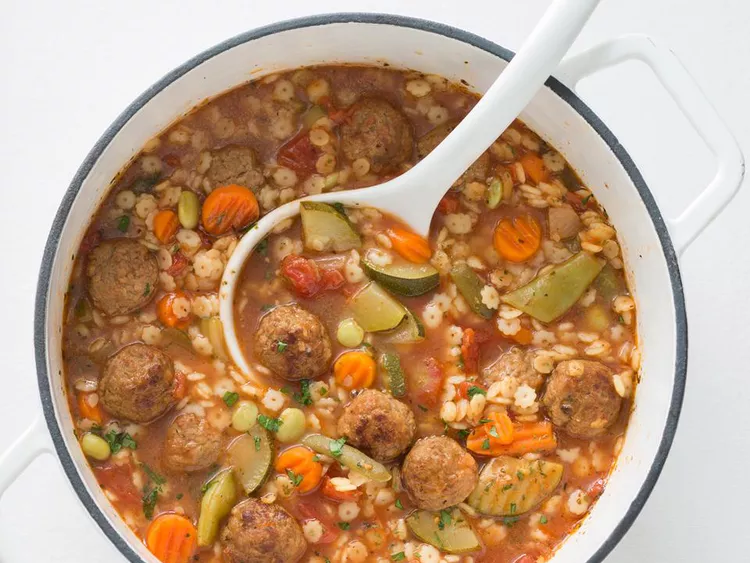

Soupe copieuse aux boulettes de viande italiennes

Cette recette donne une soupe de boulettes de viande à l'italienne, onctueuse, riche et fromagée, un vrai régal réconfortant. Utilisez les petites pâtes que vous avez sous la main et servez-la avec du pain croustillant, si vous le souhaitez.
Soumis par Suzanne call
Ingrédients
- 2 boîte (312 g chacune) de tomates en dés avec oignon et ail, non égouttées
- 2 boîte (400 g) de bouillon de boeuf
- 3 tasses d'eau
- 1 cuillère à café d'assaisonnement italien
- 1 paquet de (454 g) de petite boulettes de viande cuites surgelées à l'italienne
- 2 tasses de légumes italiens surgelés mélangés
- 1 tasse de petites pâtes sèches en forme d'étoile
- ¼ tasse de parmesan râpé
Instructions
- Dans une grande casserole, mélanger les tomates, le bouillon de bœuf, l'eau et les herbes italiennes ; porter à ébullition.
- Ajoutez les boulettes de viande surgelées, le mélange de légumes à l'italienne et les pâtes ; portez à ébullition, puis baissez le feu à doux. Laissez mijoter jusqu'à ce que les boulettes soient bien chaudes et les pâtes tendres, environ 10 minutes.
- Répartissez la soupe dans des bols ; garnissez de parmesan.